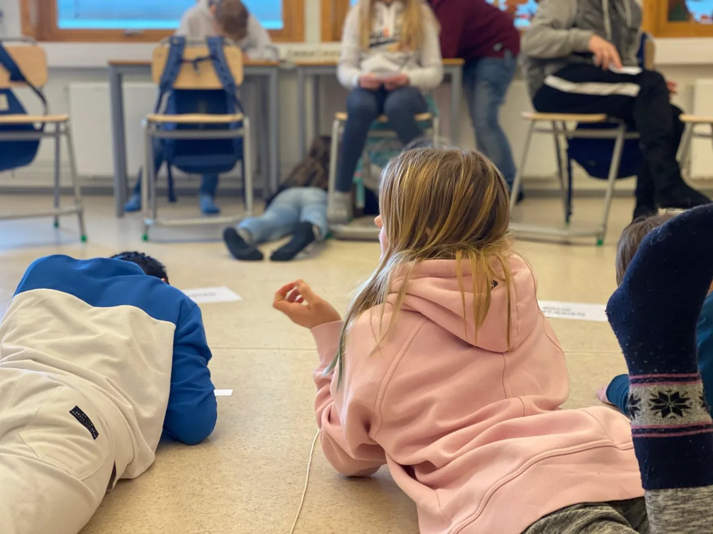

Bokbadet i seg selv er eldre enn OL-på Lillehammer (det aller første ble arrangert 3. oktober 1991), mens fenomenet Barnebokbad er litt yngre. Det ble første gang arrangert under Litteraturfestivalen på Lillehammer, 27. mai 2016. Da var det Vera Micaelsen som ble bokbadet av tre elever om sin roman Discosatan (Aschehoug, 2016), som alle i publikum hadde lest og diskutert.
I ettertid har ordet «Barnebokbad» blitt hengende ved som betegnelsen på et tilsvarende arrangement; der barn (eller ungdom) intervjuer en forfatter. Selve arrangementet kan være et forfatterbesøk i klasserommet i regi av Den kulturelle skolesekken (DKS), eller som programpost på en litteraturfestival.
Det er dog ikke arrangementet i seg selv dette egentlig handler om, men det som skjer i forkant.
